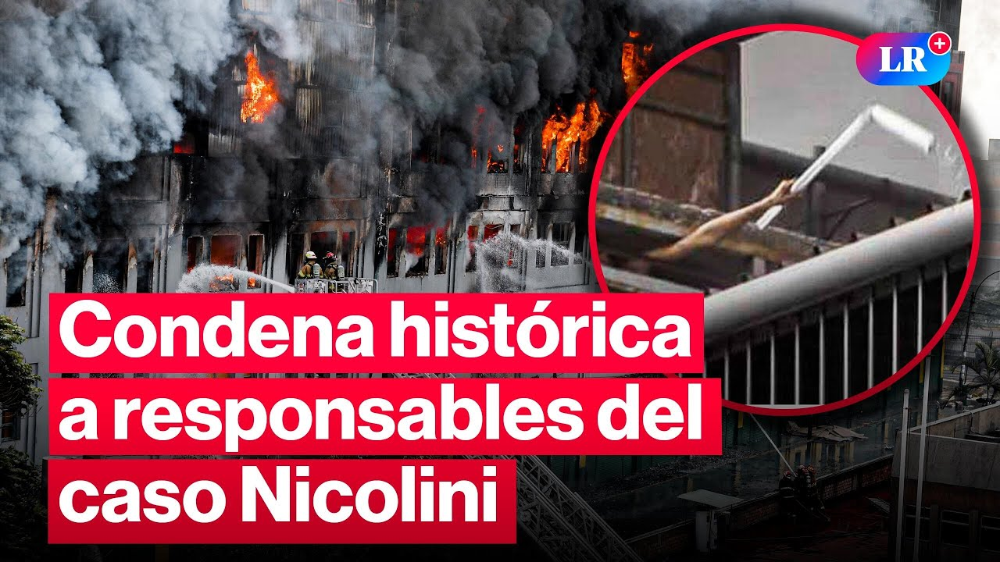
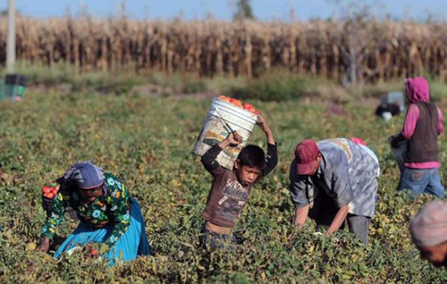
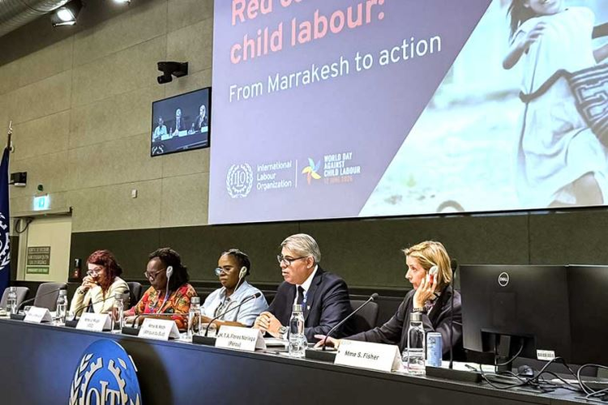

Investigación — trabajo y precariedad juvenil
La trampa del primer empleo: cómo las empresas y talleres explotan a los jóvenes

Fuente: Andina LRA casi una década de la tragedia de las Malvinas, las condiciones de precariedad se han vuelto estructurales
En junio de 2017, el incendio de la galería Nicolini en Las Malvinas conmovió al país. Dentro de contenedores metálicos cerrados con candados, Jovi Herrera y Jorge Luis Huamán pasaron sus últimos minutos de vida enviando mensajes de auxilio. Hoy, la pregunta sigue doliendo. ¿Realmente cambió algo?
Más de 700 mil infancias invisibles
La tragedia de las Malvinas fue solo la punta de un iceberg. Según los datos oficiales de INEI y la ENAHO, hoy el mercado laboral arrastra a miles de niños y adolescentes atrapados en la precariedad. Más preocupante es que ha encendido las alarmas que aquellos que deben afirmar el aula con el empleo, o peor aún, los que se ven obligados a dedicarse exclusivamente a trabajar.
“Hay una Estrategia Nacional para la Prevención y Erradicación del Trabajo Infantil en Perú… pero cifras del INEI demuestran que su implementación debe reforzarse”
Matilde Cobeña, Adjunta para la Niñez y la Adolescencia de la Defensoría del Pueblo

El impacto se mide directamente en las aulas vacías. Las estadísticas del INEI muestran un deterioro progresivo:
El golpe pega más fuerte en quienes intentan sostener ambas actividades a la vez:
La necesidad económica despoja a los jóvenes de sus oportunidades de desarrollo.

Perú presentó ante la OIT nuevas medidas para prevenir y sancionar el trabajo infantil
Durante la 114ª Reunión de la Conferencia Internacional del Trabajo en Ginebra, el viceministro de Trabajo, Tomás Flores Noriega, reafirmó el compromiso del Perú de erradicar el trabajo infantil de niños, niñas y adolescentes mediante el fortalecimiento de políticas públicas y un enfoque territorial articulado con la sociedad civil y sectores productivos. Aunque destacó una reducción sostenida en la tasa de trabajo infantil en los últimos años, reconoció que persisten retos estructurales, especialmente en las cadenas de suministro, por lo que urgió a intensificar la fiscalización y los mecanismos de restitución de derechos.
Asimismo, detalló los principales logros y herramientas implementadas por el país al año 2026.
- Se creó un grupo especializado de inspectores de trabajo encargado de ejecutar operativos de inteligencia multisectoriales para detectar y sancionar la explotación de menores.
- Se aprobó un protocolo intersectorial obligatorio que unifica la actuación del Estado para identificar, atender y restituir los derechos de los menores vulnerables.
- Se lanzó el proyecto PAÍS en cooperación Sur‑Sur con Brasil, la OIT y el PNUD, enfocado específicamente en prevenir el trabajo infantil y forzoso en la Amazonía peruana.
- Un total de 46 gobiernos locales implementaron el modelo municipal contra el trabajo infantil, integrando el enfoque de prevención dentro de las labores de fiscalización de las autoridades locales.
Fuentes
- Agraria.pe. (s.f.). [Fotografía de niños trabajando] [Fotografía]. Agraria.pe. agraria.pe/imgs/a/lx/al-menos-100-millones-de-ninos-trabajan-8490.jpg
- La República – LR+. (17 de enero de 2026). Caso Nicolini: justicia confirma condena de más de 30 años por esclavitud laboral #LR [Video]. YouTube. youtube.com/watch?v=o_B-MGJhYmc
- El Peruano. (10 de junio de 2026). Perú presentó ante la OIT nuevas medidas para prevenir y sancionar el trabajo infantil. elperuano.pe/noticia/297684-peru-presento-ante-la-oit-nuevas-medidas-para-prevenir-y-sancionar-el-trabajo-infantil
{kind=link}